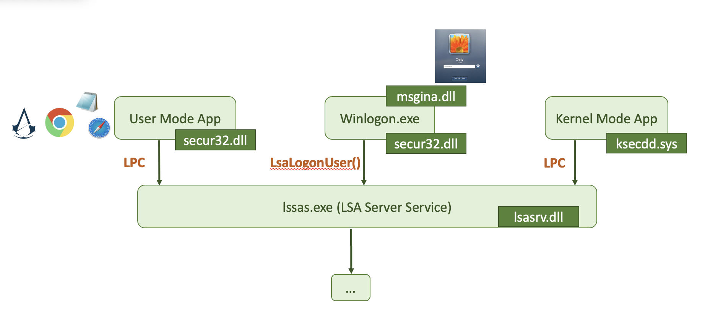
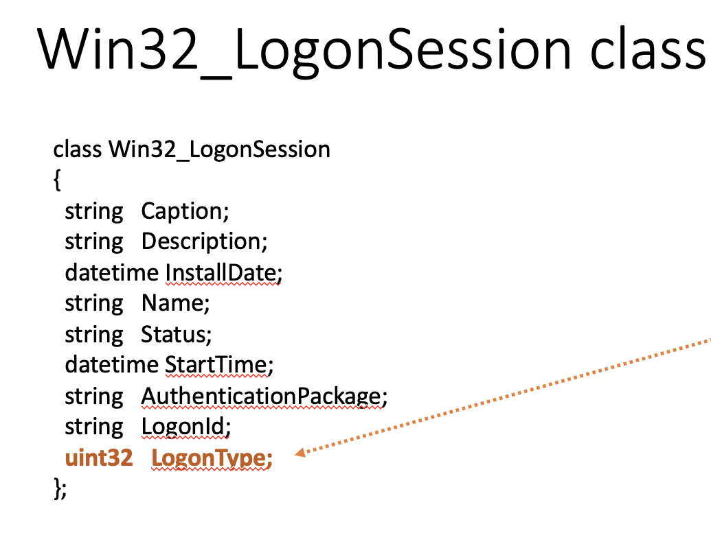
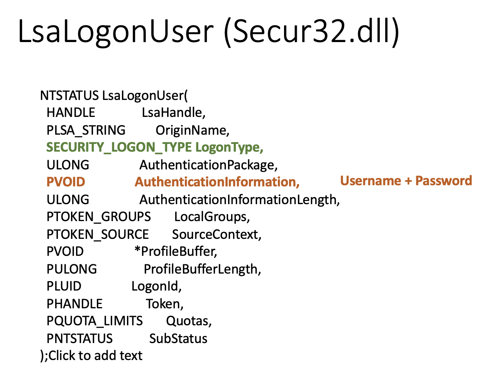

*This article centres around the crowned queen of the Windows kingdom: LSA (lsass.exe), a darling among attackers for the sheer power it wields.
Single Sign-on. LSA is its part. Responsible for authentication and authorisation. Manages derived credentials (NTLM, Kerberos tickets, sessions, hashes etc). The image file is located at %WINDIR%\System32.
🛠 https://github.com/D1rkMtr/DumpThatLSASS
Login Process
This is what a general picture looked like before Windows Vista came into play:

msgina.dll is used to handle the login process. Starting from Windows Vista, the msgine.dll was deprecated.
If you want a more thorough picture to examine:

Login Types
Win32_LogonSession class is used in Windows API to handle login, depending on the type.

📝
0.-1. - Not documented, but can occur in the wild.1- system logon?
- Console logon (keyboard, server KVM, VNC)
- Network logon (SMB, some RDP)
- Batch logon. This is used when a scheduled task initiates the logon.
- Windows service logon (aka daemons in the UNIX world)
- Proxy: This is not widely used, and is typically only used for “non-trusted” scenarios.
- Creds used to lock and unlock the screen, RDP reconnect
- Network logon with cleartext creds. This is typically associated with web-based logons.
- Creds used != creds for logon. This logon type signifies that the
RunAscommand was used with the/netonlyswitch. The user is logging on to a system different from the one that was initially logged on to. - RDP
- Cached creds. This logon occurs when a user logs on using cached credentials, typically when the domain controller is unavailable or when a laptop user is off the network.
- Cached remote interactive (~ 10). This type of logon occurs when a user logs on with cached credentials to a remote system via RDP.
- Cached unlock (~ 7). This logon occurs when a user unlocks a workstation using cached credentials.
📝 The primary benefit of NLA is that it can protect systems from being exposed to malicious users or software right upon connection. It does so by adding an extra layer of authentication at the start of the Remote Desktop Connection (RDC), before the login screen appears.
As you can see from the picture, uint32 LogonType can be set to either of the 12 values. Types Console login and RunAs when using type 2, Remote Desktop when logging with type 10, PsExec alternate creds when used in combination of 3 and 2 logon types, Remote Scheduled Task using the 4th logon type and Run as a Service using the 5th logon types all store credentials on the target.
LsaLogonUser class from secur32.dll is also a struct participating in the login process. As you can see from the picture, pvoid AuthenticationInformation is the field carrying the username and password.

🏺 LSA Secrets
🏺 SECURITY\Policy\Secrets - each key has its own registry 🔑 key. To decode them, use SECURITY\Policy 🔑 key. To finally decrypt - SYSTEM hive is needed. The attacker needs 👑 admin or higher privileges to access these keys 🔑.
🛠️ Nishang, Get-LsaSecret.ps1 to dump and decrypt secrets.
📕 RTFM
Enable-DuplicateToken # to get access to SECURITY hive by setting the token it's using to the same value as LSASS has.
Get-LsaSecret